Com funciona Plant Your Day
Descobreix pas a pas totes les funcionalitats de la nostra aplicacio per a persones amb TEA
Us de l'App per l'Alumne
Des del login fins a completar una activitat amb els seus subpassos
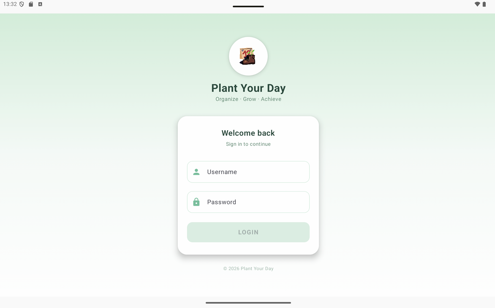
Inici de sessio
La primera pantalla que veu l'usuari es el formulari de login. Entra amb el teu correu electronic i contrasenya per accedir al teu perfil personalitzat.
- Acces amb email i contrasenya
- Disseny accessible i senzill
- Perfil personalitzat per a cada usuari
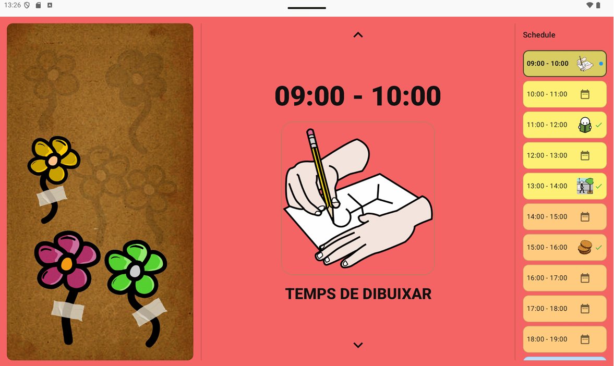
Activitat: Temps de Dibuixar
L'alumne veu l'activitat assignada per al moment actual, com ara "Temps de Dibuixar". La pantalla mostra el pictograma gran i clar amb el nom de l'activitat per facilitar la comprensio.
- Pictograma gran i visible
- Nom de l'activitat en text
- Facil d'identificar i seguir
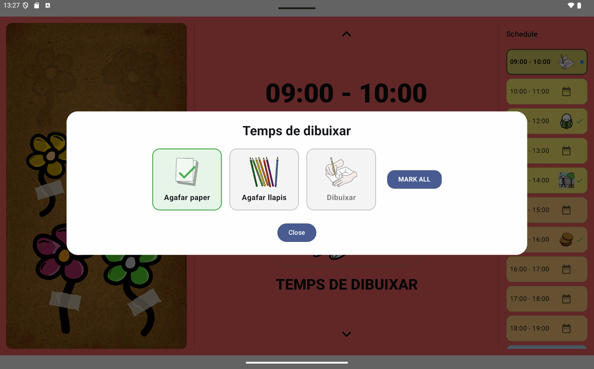
Passos de l'activitat
Cada activitat es desglossa en subpassos visuals numerats. L'alumne avanca pas a pas marcant cada accio completada, cosa que facilita l'autonomia i redueix l'ansietat.
- Passos numerats amb pictogrames
- Marcar cada pas individualment
- Progres visual clar en tot moment
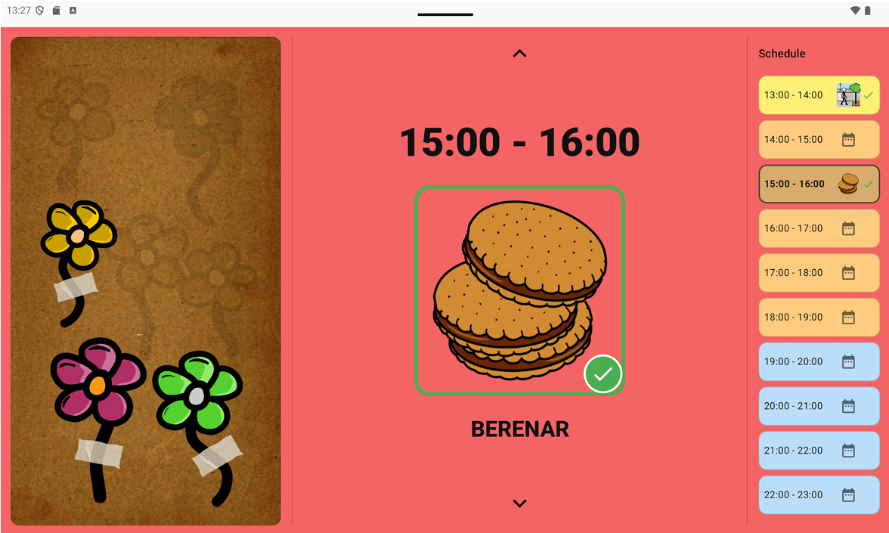
Activitat completada!
Quan l'alumne completa tots els subpassos, apareix una pantalla de celebracio. El reforc positiu immediat motiva l'usuari a continuar i consolida l'habit de completar les tasques.
- Missatge de felicitacio
- Animacio de celebracio
- Transicio a la seguent activitat del dia
Panell del Tutor
Gestio d'usuaris, calendari, horaris i creacio d'activitats
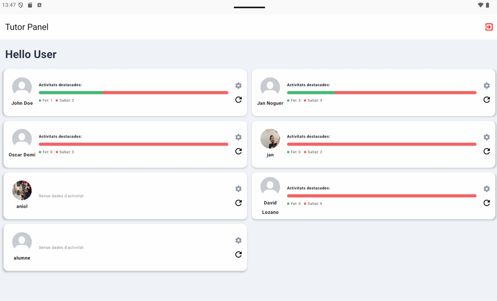
Llista d'alumnes del tutor
El tutor veu tots els alumnes assignats a ell en una pantalla clara. Des d'aqui pot accedir al perfil de cadascun, revisar el seu progres i gestionar les seves rutines.
- Vista de tots els alumnes assignats
- Acces rapid a cada perfil
- Resum de l'estat de cada alumne
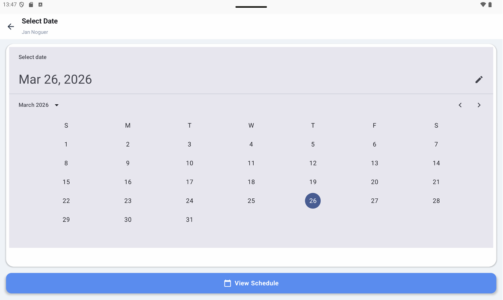
Calendari setmanal
El calendari permet al tutor planificar les rutines dels alumnes amb una vista setmanal. Es pot navegar entre setmanes i veure d'un cop d'ull quins dies tenen activitats programades.
- Vista setmanal i mensual
- Navegacio facil entre dates
- Dies amb activitats marcats visualment
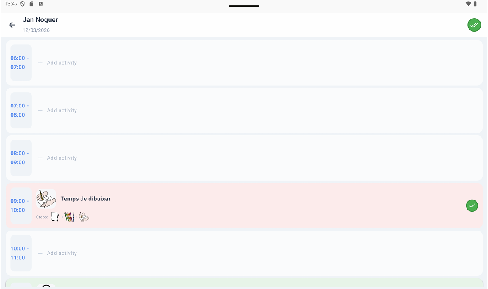
Horari amb les activitats del dia
Per a cada dia, el tutor veu l'horari complet amb totes les activitats programades per franja horaria. Pot reordenar, editar o eliminar activitats directament des d'aquesta vista.
- Activitats ordenades per hora
- Edicio rapida de cada activitat
- Afegir noves activitats a l'horari
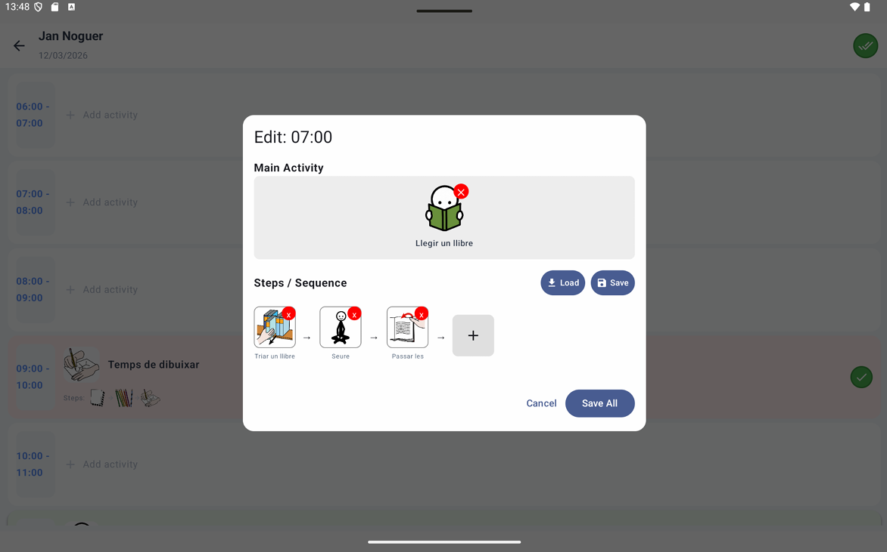
Creacio d'activitat amb subpassos
El tutor crea o edita una activitat afegint-hi subpassos detallats. Cada subpas te el seu propi pictograma i descripcio, permetent adaptar el nivell de detall a les necessitats de cada alumne.
- Afegir i ordenar subpassos
- Pictograma per a cada subpas
- Personalitzable per a cada alumne
Pictogrames i Configuracio
Cerca pictogrames d'ARASAAC i personalitza el perfil de cada usuari
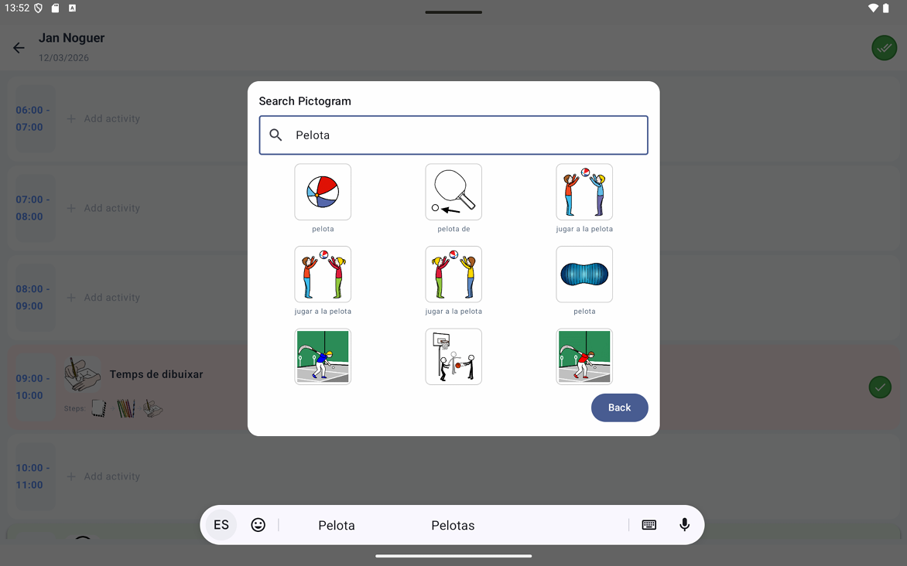
Cerca de pictogrames
El cercador de pictogrames connecta directament amb la base de dades d'ARASAAC. Escriu el nom de qualsevol activitat o objecte i obtindras una llista de pictogrames rellevants per triar.
- Cerca per paraula clau
- Milers de pictogrames disponibles
- Resultats instantanis i visuals
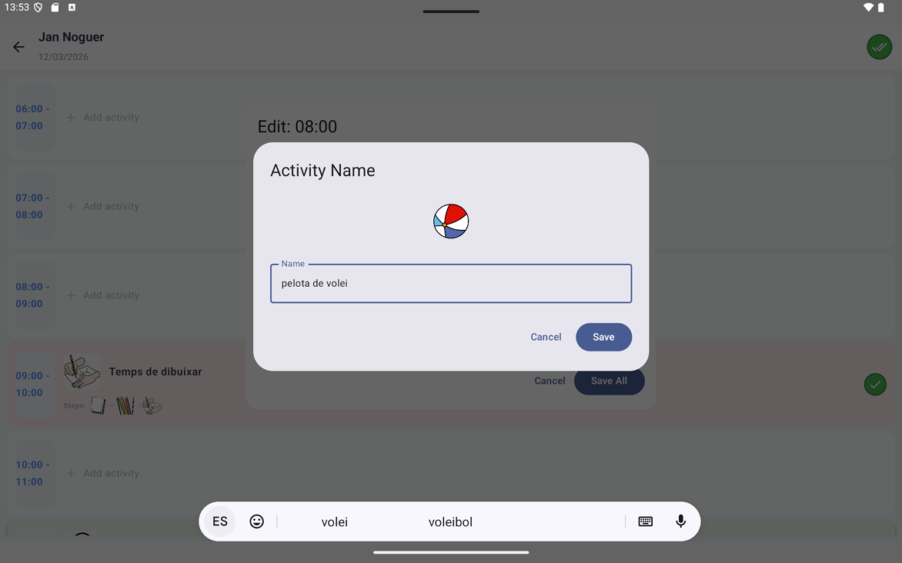
Assignar nom al pictograma
Un cop seleccionat el pictograma, el tutor pot especificar el nom exacte que apareixera a la pantalla de l'alumne. Aixo permet adaptar el vocabulari al nivell i context de cada persona.
- Nom personalitzat per a cada pictograma
- Adaptacio del vocabulari a l'alumne
- Vista previa del resultat final
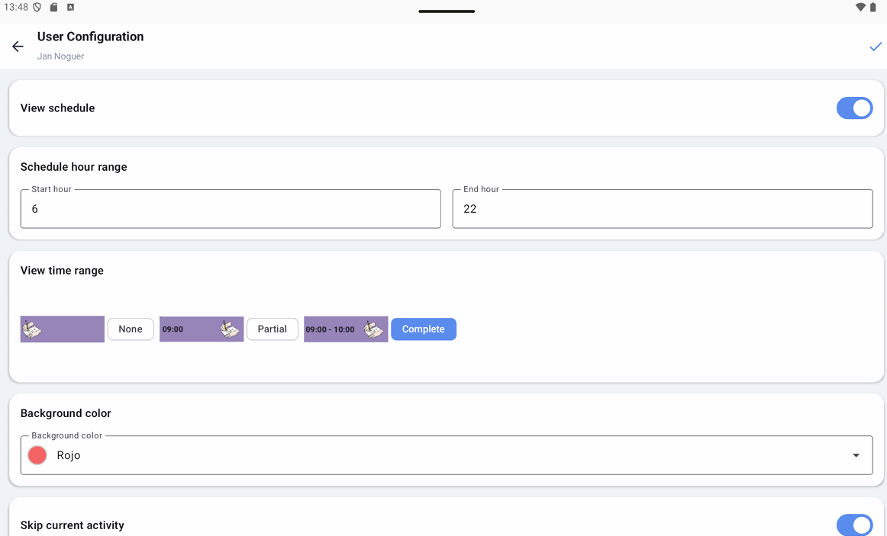
Configuracio personalitzada
Cada alumne te la seva propia configuracio: preferencies visuals, nivell de suport, opcions de so i accessibilitat. El tutor pot ajustar-ho tot des d'aquesta pantalla per adaptar l'app a cada persona.
- Preferencies visuals i de contrast
- Activar o desactivar so i animacions
- Nivell de suport i ajudes visuals
Panell d'Administrador
Gestio global de tutors, alumnes i assignacions
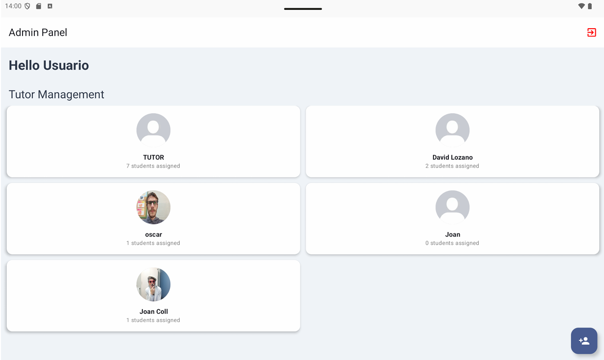
Llistat de tutors
L'administrador te una vista global de tots els tutors registrats al sistema. Pot crear nous tutors, editar les seves dades i gestionar els seus permisos d'acces a l'aplicacio.
- Llistat complet de tots els tutors
- Crear i editar perfils de tutors
- Gestio de permisos i rols
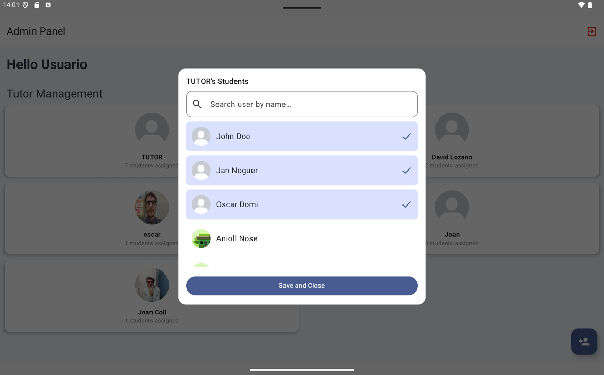
Assignar alumnes als tutors
L'administrador decideix quins alumnes estan assignats a cada tutor. Aquesta pantalla permet fer les assignacions de manera senzilla, garantint que cada alumne te un tutor responsable del seu seguiment.
- Assignacio d'alumnes a tutors
- Vista clara de totes les relacions
- Gestio centralitzada des d'un sol lloc